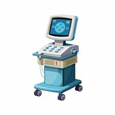
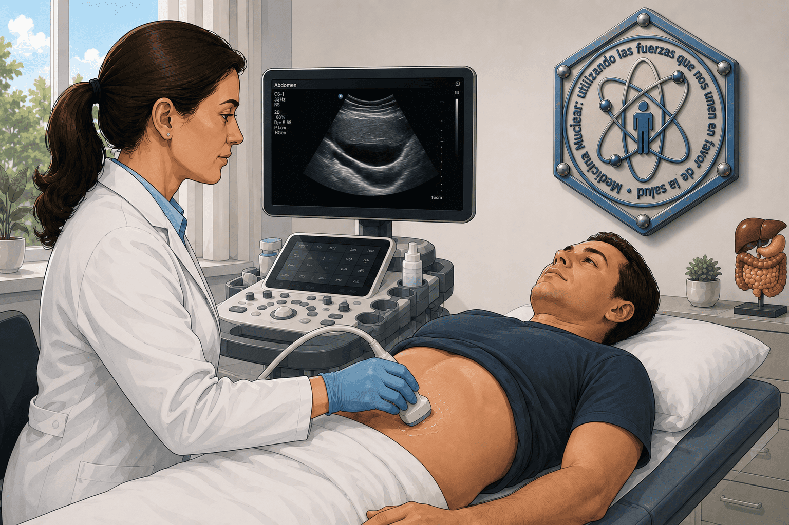
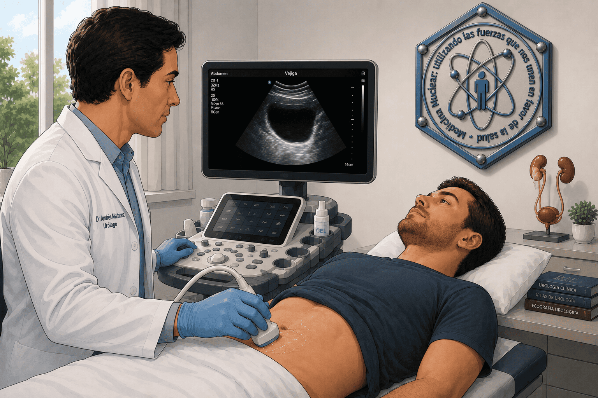
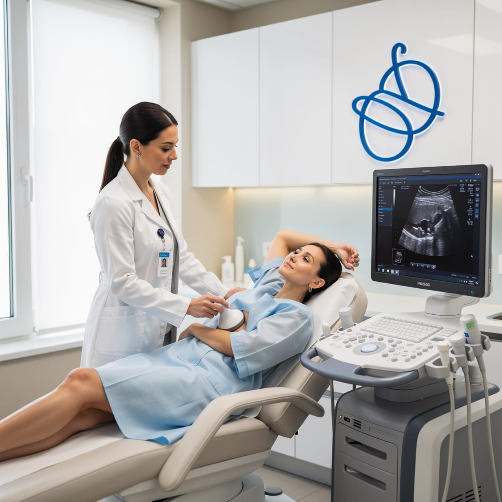
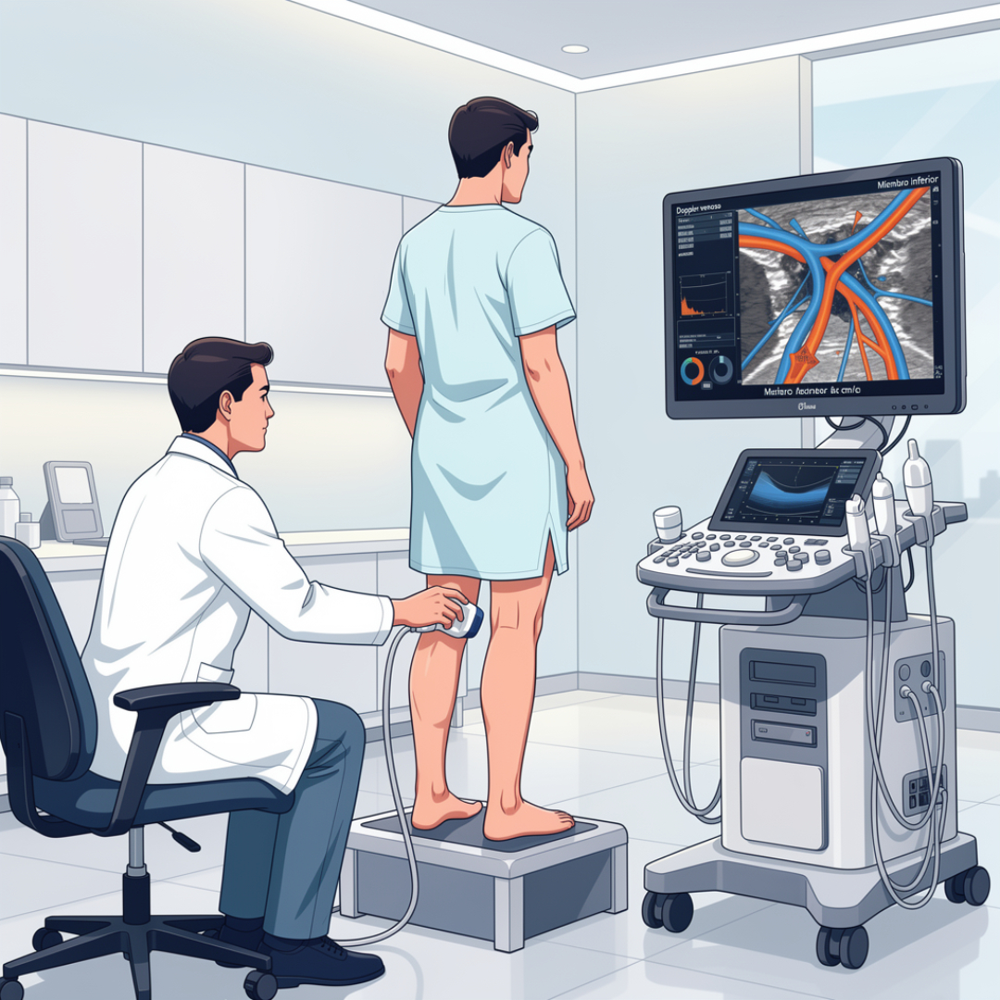
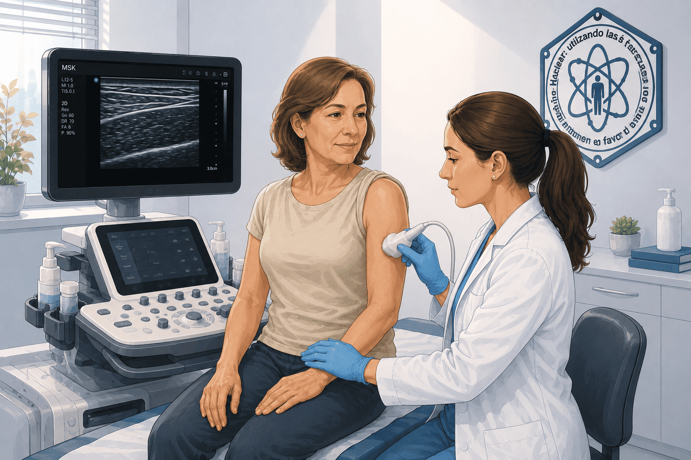
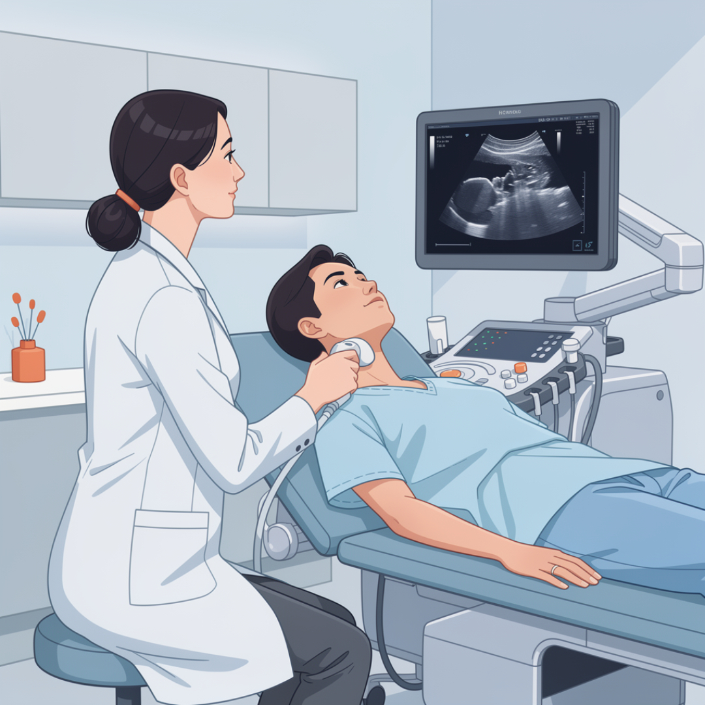
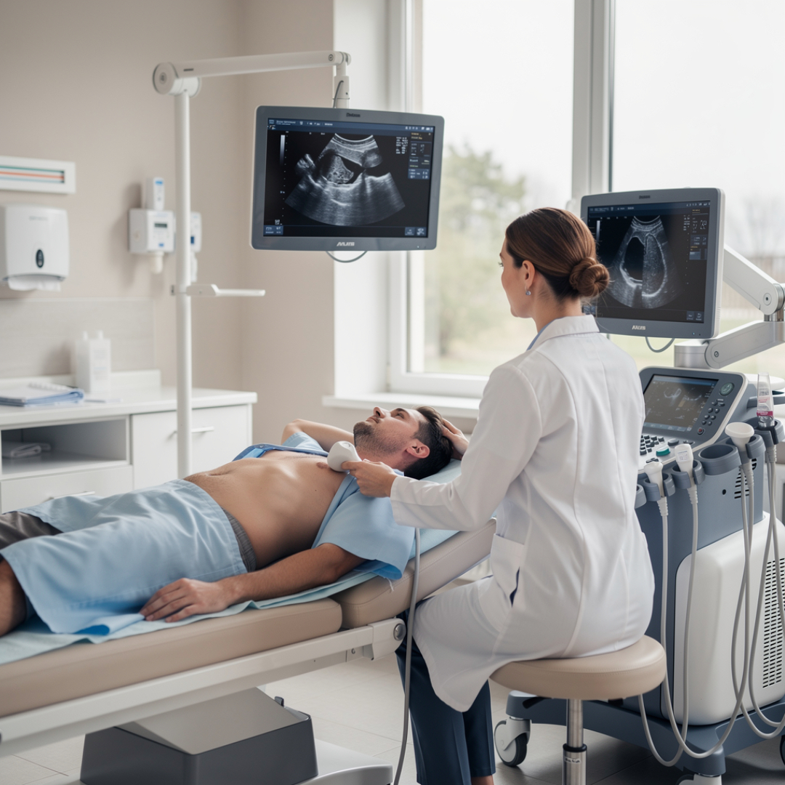

Preparación básica para la realización de la ecografía.
Selecciona el tipo de Ecografía que te han solicitado y despliega la información sobre indicaciones, preparación previa y procedimientos más importantes.
Pulsa botón para más enlaces a otras webs de pruebas de Radilogía
Esta página es sólo informativa y no sustituye las indicaciones específicas de tu centro o de tu médico. Si te han dado instrucciones diferentes, sigue siempre las de tu hospital o especialista.
Las ecografías son pruebas seguras, rápidas y no utilizan radiación ionizante. La mayoría no requieren preparación compleja, pero algunas sí precisan ayuno o mantener la vejiga llena.
Ecografía Abdominal
Hígado · Vesícula · Páncreas · Riñones
Dolor abdominal, molestias digestivas, sospecha de piedras en la vesícula o en los riñones, control de hígado graso, seguimiento de quistes o tumores abdominales y estudios inicial de muchas analíticas.
Habitualmente se pide acudir en ayunas de 6–8 horas (no comer ni beber, salvo pequeños sorbos de agua para medicación habitual). Evita bebidas gaseosas el día previo. Si eres diabético o estás embarcado en un tratamiento especial, consulta con tu médico antes de modificar la medicación o el desayuno.
Estarás tumbado boca arriba sobre la camilla. El profesional aplicará gel sobre el abdomen y deslizará la sonda por distintas zonas mientras te pide que cojas aire y lo mantengas en algunas fases. La prueba suele durar poco tiempo, entre 10 y 20 minutos.
No suele tener contraindicaciones importantes. Puede ser más difícil de valorar si hay mucho gas intestinal, apósitos quirúrgicos recientes o dolor intenso a la palpación. Comenta siempre si estás embarazada, aunque esta exploración es segura en el embarazo.

Ecografía Urológica
RIÑONES · VEJIGA · PRÓSTATA (VISIÓN EXTERNA)
Estudio de infecciones urinarias de repetición, cólicos nefríticos, control de litiasis (piedras), valoración de tamaño renal, sospecha de obstrucción urinaria y control de patología prostática desde el abdomen.
Se suele solicitar beber 2-4 vasos de agua una hora antes de la cita y acudir sin orinar, para conseguir una vejiga moderadamente llena que permita una mejor visualización. Si tu médico te ha indicado otra pauta, prioriza siempre sus instrucciones.
La exploración se realiza con el paciente tumbado boca arriba o ligeramente de lado. Se aplicará gel sobre el abdomen y la zona lumbar mientras se revisan los riñones y la vejiga. Es posible que te pidan que orines antes del final para valorar el vaciado vesical.
No suele tener contraindicaciones importantes. Puede ser más difícil de valorar si hay mucho gas intestinal, apósitos quirúrgicos recientes o dolor intenso a la palpación. Comenta siempre si estás embarazada, aunque esta exploración es segura en el embarazo.

Ecografía de Mama
Tejido mamario y axilar
Estudio de bultos o nódulos palpables, seguimiento de quistes, valoración complementaria a la mamografía, control en mujeres jóvenes con mamas densas y guía para algunas punciones o biopsias.
No suele requerir preparación especial. Es recomendable acudir con ropa cómoda que permita descubrir la zona torácica con facilidad y evitar cremas espesas sobre la piel del pecho el mismo día de la prueba.
La exploración se realiza con la paciente tumbada boca arriba o ligeramente de lado, con el brazo del lado a estudiar elevado. Se aplica gel sobre la mama y se desliza la sonda con movimientos suaves, revisando también la axila. La duración aproximada es de 10–20 minutos.
No existen contraindicaciones relevantes. En presencia de cicatrices recientes, hematomas o dolor intenso, algunas zonas pueden ser más sensibles. Comunica siempre si estás en seguimiento por un especialista de mama.

Ecografía Doppler (venosa/arterial)
Piernas · brazos · carótidas u otras arterias
Estudio de varices, sospecha de trombosis venosa profunda, valoración de la circulación arterial en piernas y brazos, control de placas en carótidas y seguimiento tras cirugías vasculares o colocación de stents.
Generalmente no se requiere preparación específica. Es útil acudir con ropa amplia o pantalones fáciles de remangar para descubrir bien la zona a estudiar. Para exploraciones de carótidas se recomienda evitar collares o prendas muy ajustadas al cuello.
La prueba se realiza tumbado. El profesional aplicará gel sobre la zona y desplazará la sonda siguiendo el trayecto de venas o arterias, ejerciendo a veces una ligera presión. En ocasiones se escuchará el flujo sanguíneo mediante sonidos emitidos por el equipo Doppler. En Eco-Doppler Venoso de los miembros inferiores en ocasiones se requerirá realizarlo en pie.
No suele tener contraindicaciones. Puede resultar algo molesta si hay heridas recientes, hematomas o dolor al comprimir la zona. En casos concretos (úlceras abiertas, infecciones extensas) la exploración puede adaptarse o posponerse según criterio médico.

Ecografía Muscular / Partes Blandas
Hombro · rodilla · musculatura y tendones
Dolor abdominal, apendicitis, diverticulitis, litiasis, estudio de tumores, traumatismos, hemorragias internas o control postoperatorio.
No suele requerir preparación especial. Se recomienda llevar ropa que permita descubrir fácilmente la articulación o zona a estudiar (por ejemplo, tirantes para el hombro o pantalón corto para la rodilla).
En función de la zona, estarás tumbado o sentado. Se aplica gel sobre la piel y se mueve la sonda mientras se te pide que realices pequeños movimientos con la articulación para valorar músculos y tendones en reposo y en actividad.
En general es una exploración muy segura. Puede resultar dolorosa si existe una lesión aguda. La presencia de escayolas, férulas o vendajes rígidos puede limitar el campo de visión. Si llevas heridas abiertas o suturas recientes, coméntalo antes de iniciar la prueba.

Ecografía Pélvica
Útero · ovarios · pelvis femenina (vía abdominal)
Estudio de dolor pélvico, reglas abundantes o irregulares, sospecha de miomas o quistes ováricos, control de patología uterina y seguimiento de hallazgos en revisiones ginecológicas previas. Esta ficha se refiere exclusivamente a la ecografía pélvica realizada desde el abdomen (no incluye la exploración transvaginal).
Habitualmente se solicita acudir con la vejiga moderadamente llena, bebiendo agua antes de la prueba y evitando orinar justo antes de entrar. Una vejiga llena actúa como "ventana" y facilita la visualización del útero y los ovarios desde el abdomen.
Estarás tumbada boca arriba. Se aplicará gel sobre la parte baja del abdomen y se desplazará la sonda sobre el vientre para estudiar útero, ovarios y el resto de la pelvis. No se introduce ningún aparato en la vagina en este tipo de ecografía.
No suele tener contraindicaciones relevantes. En pacientes con dificultad para mantener la vejiga llena o con cicatrices quirúrgicas recientes, la exploración puede ser algo más limitada. Si tu especialista considera necesaria una ecografía transvaginal, te explicará específicamente en qué consiste y se realizará en condiciones de intimidad y consentimiento informado.
Ecografía Vesical
Vejiga urinaria
Valoración del volumen de orina residual tras la micción, estudio de infecciones urinarias, sospecha de pólipos o tumores vesicales, y seguimiento en pacientes con sondaje o problemas de vaciado.
Se recomienda beber agua antes de la prueba para acudir con ganas moderadas de orinar. No vacíes la vejiga justo antes de entrar, salvo que el equipo te indique lo contrario.
Tumbado boca arriba, se aplica gel sobre la parte baja del abdomen (por encima del pubis) y se estudia la vejiga llena. En algunos casos se repetirá la medida tras orinar para valorar cuánto líquido queda dentro.
No existen contraindicaciones significativas. Si tienes mucha urgencia miccional o dolor, avisa al técnico para adaptar el procedimiento. En presencia de heridas o cicatrices recientes sobre el pubis la exploración puede ser algo más incómoda.
Ecografía Testicular
Testículos y estructuras cercanas
Dolor o aumento de tamaño testicular, bultos palpables, traumatismos en la zona, estudio de varicocele, control de tumores o quistes y valoración de infertilidad masculina.
Se recomienda beber agua antes de la prueba para acudir con ganas moderadas de orinar. No vacíes la vejiga justo antes de entrar, salvo que el equipo te indique lo contrario.
Generalmente estarás tumbado boca arriba. Se aplicará gel sobre el escroto y se apoyará la sonda con suavidad para estudiar cada testículo. A veces se comprueba la circulación con Doppler. La exploración suele ser rápida y, aunque pueda resultar algo incómoda, no debería ser dolorosa.
No se conocen contraindicaciones importantes. Si presentas dolor intenso, inflamación marcada, infecciones de piel o heridas recientes, coméntalo antes de comenzar para adaptar la exploración..

Ecografía Tiroidea / Cervical
Tiroides · ganglios del cuello · glándulas salivales
Estudio de nódulos tiroideos, aumento de tamaño de la glándula, alteraciones hormonales tiroideas, control de bocio y valoración de ganglios en el cuello.
No requiere ayuno ni preparación específica. Se recomienda acudir sin collares o prendas muy ajustadas al cuello para facilitar el acceso a la zona.
Te tumbarás boca arriba con el cuello ligeramente extendido, apoyando la cabeza en una pequeña almohada. Se aplicará gel sobre la parte anterior del cuello y se deslizará la sonda para revisar tiroides y ganglios. Es una exploración corta y bien tolerada.
No existen contraindicaciones relevantes. En pacientes con cicatrices recientes en el cuello, problemas respiratorios al extenderlo o dolor intenso en la zona, la posición puede adaptarse para mayor comodidad.

Ecografía Cardíaca
Corazón · Válvulas
Insuficiencias cardíacas, defectos en las válvulas y otras anomalías estructurales. También permite medir la función cardíaca.
No requiere en general de preparación especial previa, pero se recomienda evitar comidas abundantes antes de la prueba.
Se acostará en la camilla generalmente, en posición lateral izquierda y, se aplicará un gel para facilitar el estudio.y deslizará la sonda por distintas zonas mientras te pide que cojas aire y lo mantengas en algunas fases. La prueba suele durar entre 10 y 20 minutos.
No suele tener contraindicaciones importantes. Puede ser más difícil de valorar si hay mucho gas intestinal, apósitos quirúrgicos recientes o dolor intenso a la palpación. Comenta siempre si estás embarazada, aunque esta exploración es segura en el embarazo.
